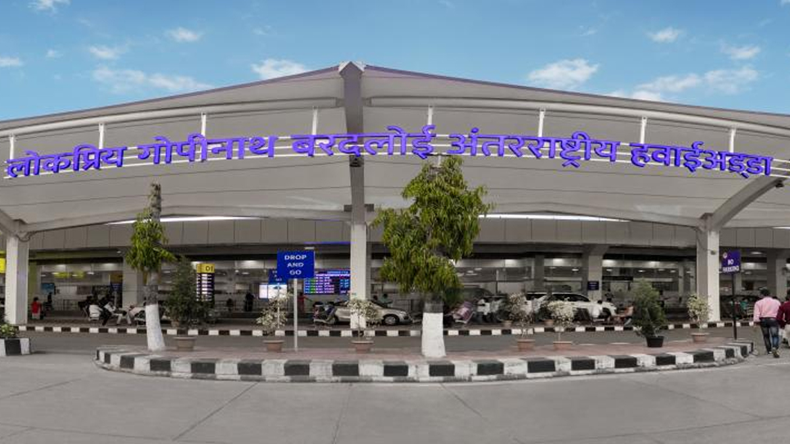
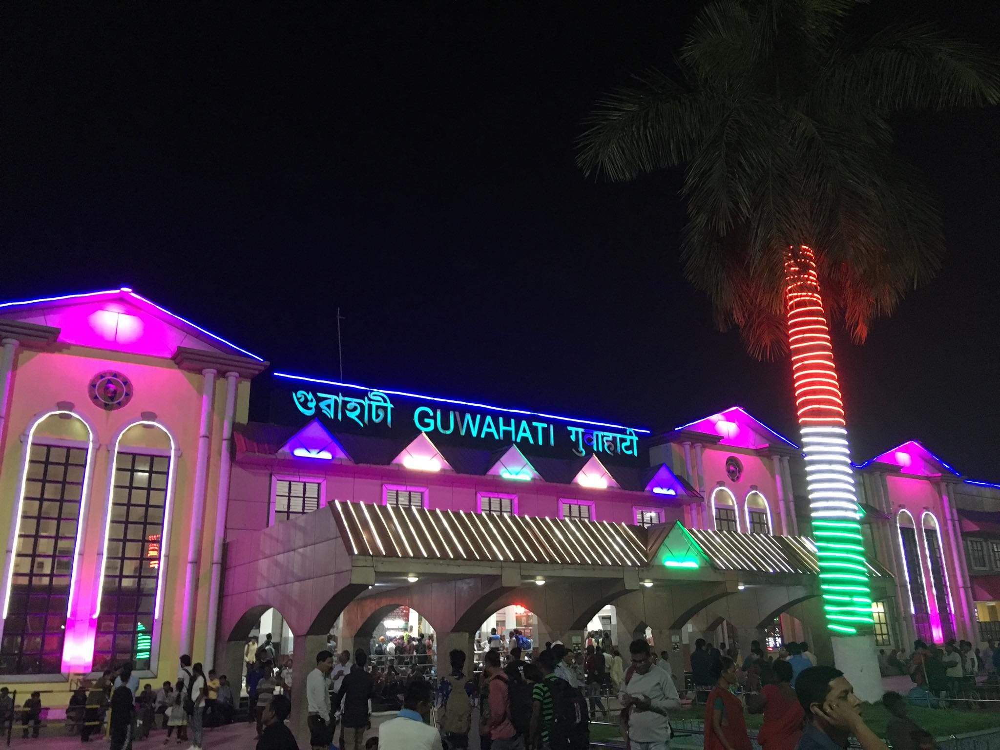
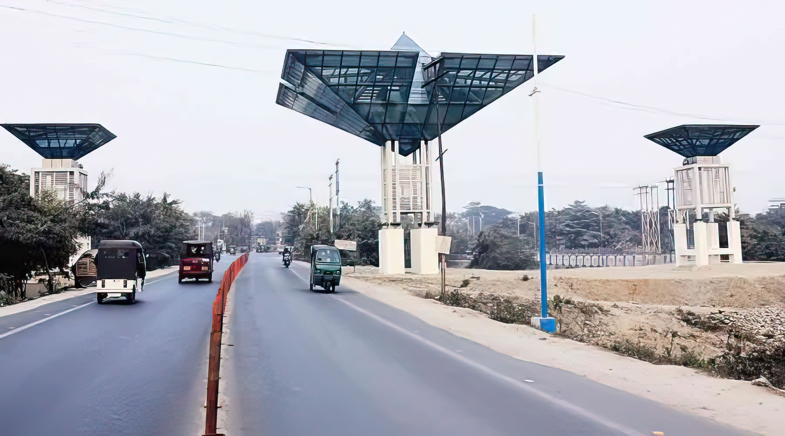
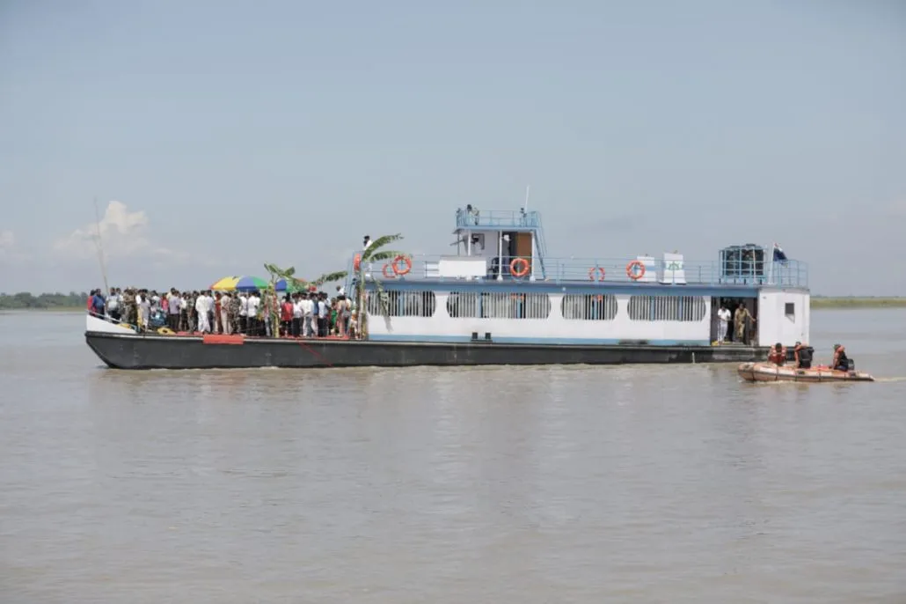

Transport System in Guwahati
Gateway to the north-east, Guwahati, has well connected airways, rail transport and road transportation network.
The city is also well connected to the other northeastern states of India.
So, when one plans to visit the north-east, Guwahati is the best place to start your journey to the land of the 'Seven Sisters.
Air Transportation in Guwahati

The city of Guwahati has a single major airport, the Lokpriya Gopinath Bordoloi International Airport which controls and manages all the air transport activities. The airport witnesses a large number of flights from across different parts of India. All the major domestic flights fly into Guwahati. One can get direct flights from Guwahati to major cities like Delhi, Mumbai, Kolkata, Chennai, Jaipur, Bangalore and all other cities of the country. There are also regular flights of leading airlines like Indian Airlines, Sahara Airlines and Jet Airways from major cities to Guwahati.
In addition to the domestic flights, there are regular international flights to Bangkok and Paro connected by Druk Air. These international flights fly twice a week to these places. There are also helicopter services available from Guwahati to neighboring places of Tura, Shillong and Tawang.
Rail Transportation in Guwahati

The city of Guwahati and the northeastern region falls under the Northeast Frontier Railway Zone under Indian Railways. The Guwahati Junction located in Lakhtokia area of Gauhati is the major railway station of the city. In addition to the major railway station, there are other smaller railway junctions and stations in the city.
There are regular trains from Gauhati to and from major cities of the country. Important trains like Rajdhani Express, the Poorvottar Sampark Kranti Express, Brahmaputra Express, Kamrup Express, the Northeast Express and Saraighat express runs at regular intervals to and from Guwahati. The longest running train in India, the Vivek Express which runs from Dibrugarh in Upper Assam to Kanyakumari in southern tip of India passes through the Guwahati Junction railway station.
Road Transportation in Guwahati

The National Highways NH 31 and NH 37 runs through Guwahati connecting the northeast to the rest of India. The city of Guwahati connects the national highways within Assam and the other states of the Northeast. People from international places like Bhutan, Nepal and Bangladesh can also travel by roads to capital city Guwahati. These highways also connect Guwahati to all the major cities of Assam. Road transportation services are not only used for transportation and tourism but for also transportation of goods and supplies to Assam and the other northeastern states.
Water Transportation in Guwahati

The Inland Water Transportation department is headquartered in Pandu port in Guwahati. The waterways transportation services of Guwahati are used for the transportation of bulk goods and cargo, for movement of passenger and tourist vessels. There are ferry services for passenger transportation from different ports along the Brahmaputra to Guwahati Pandu port.
Buses in Guwahati
Buses in Guwahati are the major public transport in Guwahati with a large amount of intercity transportation and movement being done in buses.
There are (Assam State Transport Corporation) ASTC buses and private buses which take passengers to one destination to another within the city. Different bus stands are located within the city for easy movement.
In addition to this, for transportation outside Guwahati by bus, there are a number of bus operators which regularly run day and night buses to transport people from Guwahati to neighboring cities and towns.